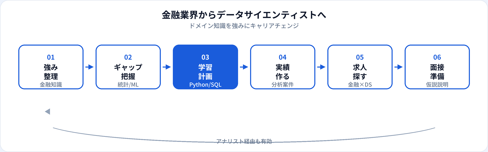

銀行・証券・保険・フィンテックなど金融業界の経験者がデータサイエンティスト（DS）を目指すケースは多くあります。与信審査、リスク管理、顧客分析など、もともとデータと意思決定が密接な業務が多いため、ドメイン知識は大きな武器になります。一方で、営業・事務・企画職からいきなりDS職へ移るには、Python・統計・機械学習のギャップを埋める必要があります。本記事では、金融で育つ強み、足りないスキル、転職ルート、求人の探し方、面接での伝え方を2026年6月時点で整理します。
金融業界経験者がDSを目指す理由
金融はクレジットスコアリング、不正検知、解約予測、マーケティング最適化など、データサイエンスの代表例が業務に直結しやすい業界です。規制・コンプライアンスの文脈も理解している人材は、モデルの説明責任やガバナンスが重視される現場で評価されやすくなります。
転職市場では、汎用のMLスキルに加え「金融ドメインを理解した分析者」への需要があります。KPIの意味、データの偏り、ビジネス上のトレードオフを説明できることは、PoCで終わらない分析につながります。詳しくはデータサイエンティストの解説も参照してください。
金融業界で育つ強み
ドメイン知識
与信、金利、保険数理、投資商品、決済。課題設定と評価指標の選び方に直結する。
リスク・規制感覚
個人情報、モデルリスク、説明可能性。金融系DSで重視されるガバナンスの土台になる。
数値リテラシー
金利・損益・率の読み方。統計学習と接続しやすく、ビジネス翻訳が得意になりやすい。
ステークホルダー調整
営業・審査・法務との連携経験は、分析結果を意思決定に届ける力として活きる。
足りないスキルとギャップ
前職によって差はあります。データサイエンティストとアナリストの違いもあわせて確認してください。
| スキル領域 | 金融職で不足しがちな点 | 補強の優先度 |
|---|---|---|
| Python | Excel・Access・VBA中心、実装未経験 | ◎ 最優先 |
| SQL | 定型レポートのみ、複雑なJOINが苦手 | ◎ 分析の土台 |
| 統計・実験設計 | 相関と因果の区別、仮説検証の型 | ◎ DSの核心 |
| 機械学習 | 手法の選択と評価指標の設計 | ○ ポートフォリオで示す |
| Git・再現性 | 個人ファイル管理、ノートの属人化 | ○ 早期に習慣化 |
学習の全体像
転職ルート（3パターン）
| ルート | 概要 | 向いている人 |
|---|---|---|
| 社内の分析部門へ | 現職のデータ分析・リスクモデル・マーケ分析チームへ異動し、実績を積んでから外部へ | 社内に分析組織がある、転職リスクを抑えたい |
| データアナリスト経由 | 金融系企業やフィンテックのデータアナリストとして入り、DSスキルを伸ばす | SQL・BIから段階的に学びたい |
| フィンテック・金融SIへ | 決済、レンディング、保険テック、金融向けSaaSのDSポジションへ | スピード感のある環境で実装力を伸ばしたい |
いきなり大手Web企業の汎用DSを狙うより、金融×データの文脈がある求人の方が、経験の説明とマッチしやすいです。
転職準備の流れ

学習・準備のタイムライン
週10〜15時間の学習を想定した目安です。
-
0〜3か月：SQLとPython基礎
金融に近い公開データ（信用リスク、保険など）で集計・可視化。G検定で用語整理も有効。
-
3〜6か月：統計と仮説検証
A/Bテストの考え方、回帰・分類の基礎。ビジネス問いを自分で立てる練習。
-
6〜9か月：ポートフォリオ完成
「金融の問い」を題材に、EDA→モデル→示唆をREADME付きで公開。ポートフォリオガイド参照。
-
9〜12か月：応募・社内案件
金融×DSキーワードで求人検索。並行して社内の分析依頼・改善提案に参加。
金融×DSの求人の探し方
| キーワード | 想定される業務 |
|---|---|
| 与信 / スコアリング / デフォルト予測 | 信用リスクモデル、審査の自動化 |
| 不正検知 / AML | 取引モニタリング、異常検知 |
| 解約予測 / LTV / マーケ分析 | 顧客セグメント、施策効果測定 |
| 保険数理 / 損害予測 | 料率設定、リスク評価 |
| アルゴリズムトレード / クオンツ | ※別職種に近い場合あり。JDを要確認 |
実装・本番運用比重が高い求人はAIエンジニアやMLエンジニアに近い場合があります。分析と実装のどちらが中心か、JDで確認してください。
職務経歴書・面接での伝え方
職務要約の例
「地方銀行で法人与信に4年。審査資料の分析経験を活かし、信用リスクの分類モデルを個人開発。Python・SQL・G検定取得済み。」
面接で話す軸
①ビジネス課題 ②仮説とデータ ③手法と限界 ④業務へのインパクト。数字（件数・率・金額）を添える。
差別化ポイント
「金融を知っているからこそ、データの解釈とリスク説明ができる」ことを、具体例で示す。
よくある質問
金融業界出身でもデータサイエンティストになれる？
可能です。ドメイン知識とPython・統計・MLスキルを組み合わせ、金融文脈のポートフォリオを用意すると転職しやすくなります。
金融からDSへ移るのにどのくらいかかる？
週10〜15時間なら9〜15か月が目安です。社内分析部門への異動ができれば短期化できる場合もあります。
データアナリストを経由すべき？
SQLとBIに慣れていない場合は、データアナリスト経由が現実的なことが多いです。
文系の金融職からでも目指せる？
業務知識は強みになりますが、Pythonと統計の習得期間は必要です。社内の分析支援から入る例も多いです。
製造業出身向けの記事はある？
別業界向けには製造業からAIエンジニアへ転職する方法も公開しています。